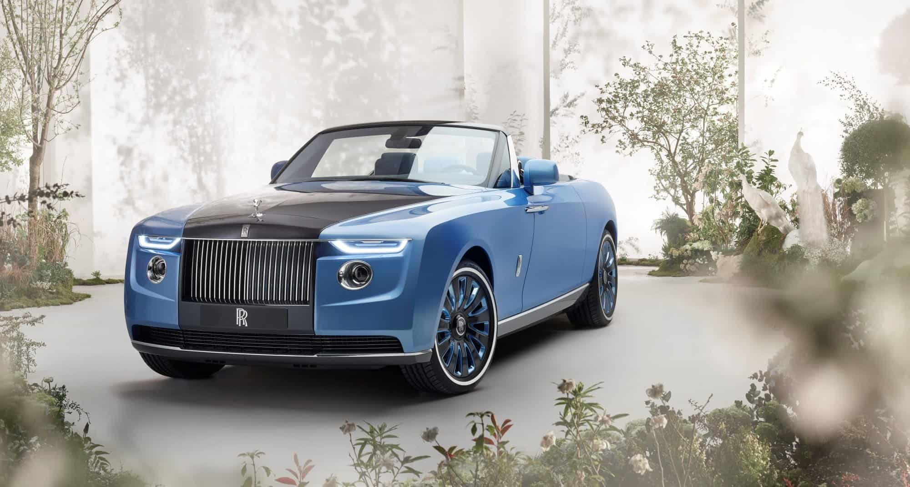

SUPERCARROS
Quando falamos em marcas de carros, podemos dividi-las em várias
categorias, como populares, carros de luxo, supercarros, hipercarros, e muitos outros.
Para começar, vamos falas dos supercarros. Supercarros são uma classe de carros que possuem
desempenho e qualidade muito superior em relação aos demais
automóveis. Esses veículos contumam utilizar materiais não convencionais em sua fabricação, como
fibra de carbono, com o intuito de reduzir o peso do carro
para aumentar o desempenho. Por essa razão, costumam ser extremamente caros e geralmente possuem
produção limitada, na qual são feitos por encomenda.
1. FERRARI

A Ferrari é uma fabricante italiana, fundada por Enzo Ferrari em 1939
na divisão de corridas da Alfa Romeo. A empresa lançou seu primeiro carro em 1940.
Em
2014,
a Ferrari foi classificada como a marca mais poderosa do mundo
pela Brand Finance e em 2018, a Ferrari 250 GTO foi vendida por 70
milhões
de dólares e se
foi o carro mais caro da história até 2022. Alguns exemplos de supercarros da Ferrari são a SF90,
296 GTB, 458, 812, entre outros.
Nos aos 60, iniciou-se um efeito borboleta que
criou as duas maiores concorrentes da Ferrari: Ferruccio Lamborghini constumava dirigir esportivos
como
Ferrari 250 GT, e fez uma queixa para Enzo dizendo que tinha um defeito crônico na embreagem. Em
resposta,
ele disse que Ferruccio não entendia de carros e, se não estivesse satisfeito, que fizesse algo
melhor.
O resultado foi a empresa que pode ser vista abaixo.
2. LAMBORGHINI

A Lamborghini surgiu em 1963, criada por Ferruccio Lamborghini
, como dito no tópico acima. Produz automóveis de luxo e de alto desempenho, criados para
competir com a Ferrari. Ferruccio originalmente fazia tratores e, após sua discussão com
Enzo Ferrari, criou a principal concorrente da Ferrari. Atualmente, a marca faz parte do
Grupo Volkswagen.
Em 1964 foi criado o primeiro Lamborghini, o 350 GT, ultilizando um motor V12. Hoje em
dia
a marca possui diversos modelos, podendo citar alguns como Huracan, Aventador, Revuelto, Veneno, e
muito outros.
Curiosamente, o efeito borboleta que deu origem a essa marca também criou um dos maiores
concorrentes
da Lamborghini, que será explicado abaixo.
3. PAGANI
A Pagani foi fundada em 1992, por Horacio Pagani.
A história da criação dessa grande marca tem muita semelhança com a criação da Lamborghini. Horacio
trabalhava
na Lamborghini e em 1984 liderava o projeto do Lamborghini Countach Evoluzione, o primeiro
supercarro da história
com painéis em fibra de carbono. O modelo era inovador para a época, e Horacio queria expandir a
utilização
de fibra de carbono nos carros, porém a Lamborghini não deu muito crédito aos seus projetos,
alegando que
a Ferrari não usava fibra de carbono, então por que eles deviam usar? Mas foi em 1987 que a marca
descobriu que estava errada, com a Ferrari lançando a F40, feito e fibra de carbono e sendo um
enorme sucesso.
Logo depois, Horacio abandonou a marca italiana e em 1992, a Pagani foi fundada, se
tornando um concorrente
direto da Lamborghini e Ferrari. Sua marca registrada é a própria fibra de carbono. Atualmente, a
Pagani possui apenas
2 modelos de carros, sendo eles o Zonda (e suas variações como o F Roadster) e o Huayra.
4. MCLAREN

A McLaren, além de fazer supercarros, é muito conhecida pela sua participação em corridas,
assim como a Ferrari.
A marca foi criada pelo piloto neozelandês Bruce McLaren,
iniciando-se com carros de corrida. Em 1966, a marca fez sua primeira aparição na Fórmula 1, e
começou a fazer carros de rua
em 1969, a partir do McLaren M6GT, criado pelo próprio Bruce.
Atualmente, a marca disputa diversas corridas, como F1, 24 horas de Le Mans, 500 milhas
de Indianápolis, e muitas outras.
Ela possui diversos supercarros, podendo citar 720s, 765LT, Artura e o mais famoso eles:
McLaren Senna. Esse modelo
foi criado em homenagem ao grande
Ayrton Senna, tricampeão
mundial de Fórmula 1, e é um dos carros
mais exclusivos e rápidos da marca.
5. PORSCHE

Porsche é uma fabricante alemã de carros esportivos de alto desempenho, fundada em 1931 por
Ferdinand Porsche e
seu filho Ferry
Porsche,
atualmente fazendo parte do Grupo Volkswagen.
Além de possuir diversos carros de estrada, a marca é muito conhecida pela participação
em
competições, como nas 24 horas de Le Mans, a qual já foi campeã. A Porsche já fez diversos carros
que entraram
para a hitória, como o Carrera GT,
que estava a frente da maioria dos supercarros da época e que macou muitos por causa do acidente com
Paul Walker, 911 GT3 RS,
entre outros.
A linha atual da Porsche conta com o 718, 911, Panamera, Macan, Cayenne e Taycan.
CARROS DE LUXO

Quando falamos em carros de luxo, falamos daquelas marcas em que o valor é representado pelo
status, pela
exclusividade e detalhes. As fabricantes de carros de luxo não pensam apenas no desempenho, mas
também em tecnologias
para aumentar o conforto do carro, além dos designs incríveis e chamativos do exterior e interior do
carro.
As fabricantes de supercarros citadas acima também entram na categoria de carros de
luxo, mas focam
principalmente em desempenho, mas existem outras focadas em conforto e tecnologia.
1. BENTLEY

A marca britânica Bentley foi fundada em 1919 por
Walter Owen Bentley, e é bastante famosa pelos seu designs entremamente luxuosos e caros. A
marca foi comprada
pela Rolls Royce em 1931, e em 1998, a posse passa a ser do Grupo Volkswagen. Além disso, a marca é
famosa por fornecer seus carros
para a realeza britânica, e também já foi campeã das 24 horas de Le Mans
Atualmente a marca possui diversos modelos, como o Bentayga, Azure, Arnage e o mais
famoso deles,
Bentley Continental
GT.
2. ROLLS ROYCE

Talvez a marca mais conhecida de carros de luxo, a Rolls Royce foi fundada em 1906 por
Henry Royce e Charles Rolls,
e ficou conhecida pelos seus carros extremamente caros e luxuosos, no qual seu modelo mais
barato, o Ghost Series II, custa R$2,9 milhões. Geralmente seus carros são destinados à realeza
e chefes de estado.
Além disso, a marca é dividida em Rolls-Royce Limited, que controla a produção de aero-motores e sua posse
é da empresa inglesa Vickers, e pela Rolls-Royce Motors, que controla a parte automobilística e sua posse é da BMW.
Alguns de seus carros são o Cullinan, Ghost, Phantom, entre outros.